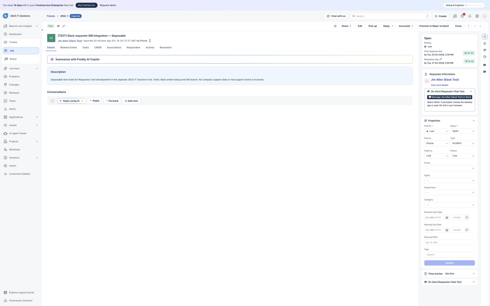
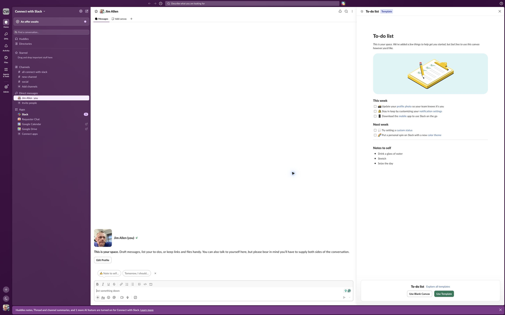

See the requester flow
Screens captured from the separate Freshservice trial and Slack test workspace.
The demo uses the workspace owner's own account as the requester. It verifies a self-DM with an empty composer. No message was sent. The development label is visible because this is a private test installation.
Screenshot walkthrough, not a continuous screen recording. Labels explain the tested actions.
1. Open the requester action
The hosted app reads the current requester's email and matches an active Slack member.

2. Open Slack
The browser resolves the member link to the correct workspace and conversation. The agent remains in control of the message.

Installation in one minute
- Install through Freshworks Marketplace when the release is approved.
- Complete the Slack OAuth tab and select the workspace.
- Sign in to Slack before using the requester action.